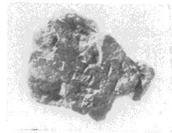
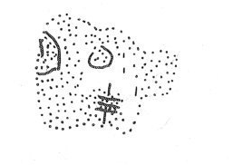

-
ZA29
Names
ZA29, ZA 29
Support
Stone vessel
Location
Zakros
Findspot
Unavailable


Scribe
Unavailable
Context
Unavailable
Dimensions
[1.90]
[2.70]
1.10
cm
GORILA OCR
Catalogue
HM
Hiraklion Museum
Readings
1 1 0 MA doubtful
1 1 1 100 doubtful
1 2 2 TE doubtful
𐙁𐄙𐘃
MA100TE
𐙁𐄙
𐘃
MA100
TE
ZA 29
, page tablet (HM --) (GORILA III: 206-207),
provenience unknown
|
side.line
|
statement
|
logogram
|
number
|
fraction
|
|
|
supra
mutila
|
|
|
|
|
a.1
|
|
]
MA
|
100
[
|
|
|
a.1
|
|
]
TE
[
|
|
|
|
|
infra mutila
|
|
|
|
Commentary © John Younger
References
papers/GORILA-Vol3.pdf#page=230